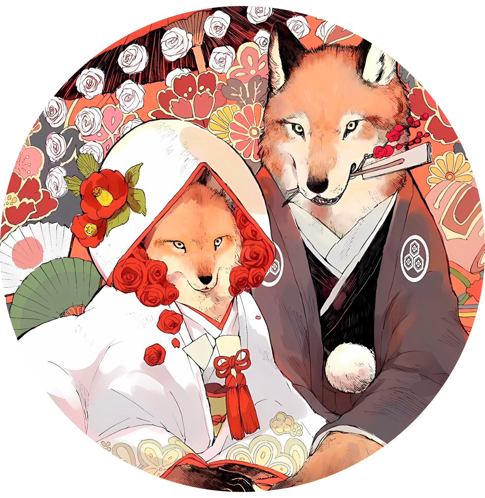

ГЛАВНАЯ
СТРОЕНИЕ
СРЕДА ОБИТАНИЯ
ПИТАНИЕ И ВРАГИ
О КИЦУНЭ
СЛЕД В ИСКУССТВЕ
РАЗМНОЖЕНИЕ
В воспитании лисят участвуют оба родителя.
Первые две недели самец не допускается
в логово, а только охраняет вход в него.
Он приносит пищу для самки, не отлучающейся
от щенков

АРЕАЛ ОБИТАНИЯ
евразия
северная америка
австралия
север
африки